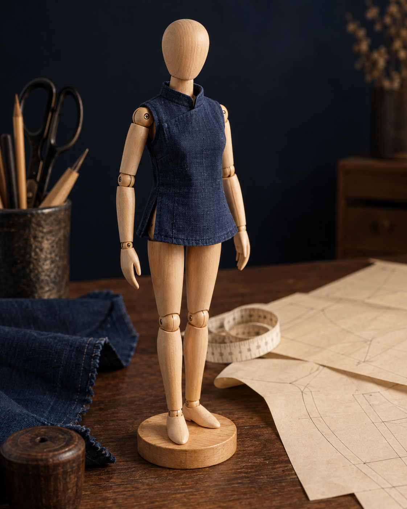

頸圍是脖子根部繞一圈；頸長是上下高度。本款無領上衣使用頸圍，頸長留待高領款設計。
MEASURE · DRAFT · MAKE
讓每一件小衣服，
都有自己的尺寸。
從文化原型認識結構，用實量尺寸做娃娃的上衣、裙子、褲子與袖子。
WORKSHOP 01
每種版型可獨立輸入尺寸、設定縫份與列印。
LIVE PATTERN
基本上衣
裁剪線（含縫份）縫合線量測基準線預覽自動縮放，非螢幕實際尺寸

MADE FOR YOUR DOLL
先量身，再動剪刀。
第一款：後開式無袖上衣
MEASUREMENT NOTES
小尺寸，更需要量對位置。
娃娃身高不能代替背長。背長由後頸根量到腰線；衣長由後頸根量到預定下襬。
肩寬量兩肩端之間的水平距離；腋深由後頸根水平線垂直量到腋下水平線。
本款採後中心全開，避免套過大頭。另加貼邊與扣合搭份；縫份可在工作台設定；搭份與貼邊另行繪製。
THE FOUNDATION
從文化原型開始
成人公式研究與比較。
這裡的數值不會套用到上方娃娃試版。
| 基礎製圖尺寸 | 原式 | 計算結果 |
|---|
這是基礎公式表，並非完整文化原型紙樣；胸褶、肩褶及曲線請配合原教學。成人固定常數不能直接視為娃娃的鬆量。
延伸閱讀：基本窄裙 · 基本長褲 · 文化式原型袖。本站新增款為獨立設計的娃娃簡化試版，非上述成人原型。
參考來源：愛打版 iPatterning · 原型計算機 ↗ · 新文化式教學 ↗ · 舊文化式教學 ↗。娃娃試版為本站獨立實量簡化法，不是上述原型的等比縮小版。